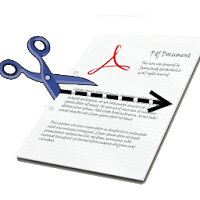

|  |  |
PDF Scissors beta
v.0.0.2.1
Basically it plays with the pdf file format, so any device with pdf viewer should work... Kindle, iPad, iPhone, Nook Bookeen, Sony readers etc...
However, I am mostly testing with Kindle. In short, It's a tool to crop pdfs.
Objective to create this, was to read pdf files (specially the scanned ones) easily in ebook readers, like kindle. And by the way, it's a free tool!
Features:
Why:
I myself faced a lot of difficulties to read pdf in kindle (and mobile phones / internet tablets), specially the image based pdfs (scanned image pdfs). Got tired of zooming and scrolling while reading a nice book. So created this to help me 'dive into the reading'. I hope it helps you too. Why free? Well, I like programming and I needed the tool, so I would have created it anyways :P
Project Links:
| How does it work?It will use 'Java webstart' technology. You need to have latest Java in your computer or as part of your PortableApps.com install.
The app does not modify the original pdf, it creates a new pdf with the new crop areas that you will draw.
NOTE: The app does NOT upload any file / any data from user's computer, the pdfs are cropped on user's machine.
Another note: App may ask to connect to Google sites, don't worry, it does that only to check whether there is any updated version of the app. It's an open source app and I have no intent to collect any user data.
|